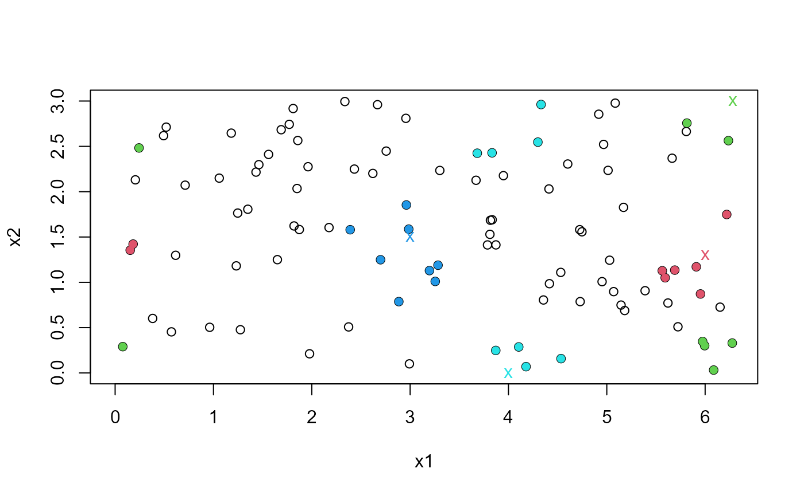

Uses a user-supplied function to find the k nearest neighbours of
specified points in a dataset, adding the option to wrap certain variables
on a torus.
Arguments
- data
An \(M\) by \(d\) numeric matrix or data frame. Each of the \(M\) rows contains a \(d\)-dimensional observation.
- query
An \(N\) by \(d\) numeric matrix or data frame. Each row contains an \(d\)-dimensional point that will be queried against
data.- k
An integer scalar. The number of nearest neighbours, of the points in the rows of
query, to find.- fn
The function with which to calculate the nearest neighbours. The syntax of this function must be
fn(data, query, k, ...). The default isRANN::nn2. Another possibility isnabor::knn.- torus
An integer vector with element(s) in {1, ...,
ncol(data)}. The corresponding variables are wrapped on the corresponding range gives inranges.- ranges
A
length(torus)by2numeric matrix. Rowigives the range of variation of the variable indexed bytorus[i].ranges[i, 1]andranges[i, 2]are equivalent values of the variable, such as 0 degrees and 360 degrees. Iflength(torus)= 1 thenrangesmay be a vector of length 2.- method
An integer scalar, equal to 1 or 2. See Details.
- ...
Further arguments to be passed to
fn.
Value
An object (a list) of class c("nnt", "donut") containing the
following components.
- nn.idx
An \(N\) by \(d\) integer matrix of the
knearest neighbour indices, i.e. the rows ofdata.- nn.dists
An \(N\) by \(d\) numeric matrix of the
knearest neighbour distances.- data, query, k, fn
The arguments
data,query,kandfn(in factsubstitute(fn)).- torus, ranges, method
If
torusis supplied, the argumentstorus,rangesandmethod.- call
The call to
spm.
Details
If method = 1 then the data are partially replicated, arranged
around the original data in a way that wraps the variables in torus on their respective
ranges in ranges. Then fn is called using this replicated
dataset as the argument data. If k is large and/or
data is a sparse dataset then it is possible that a single
observation contributes more than once to a set of nearest neighbours,
which is incorrect. If this occurs then nnt uses method 2 to
correct the offending rows in nn.idx and nn.dists in the
returned list object.
If method = 2 then the
following approach is used for the point in each row in query.
The data indexed by torus are shifted (and wrapped) so that the
point is located at the respective midpoints of ranges.
Method 2 is efficient only if the number of points in query is
small.
If torus is missing then fn is called using
fn(data = data, query = query, k = k, ...), so that a call to
nnt is equivalent to a call to the function chosen by fn.
References
Arya, S., Mount, D., Kemp, S. E. and Jefferis, G. (2019) RANN: Fast Nearest Neighbour Search (Wraps ANN Library) Using L2 Metric. R package version 2.6.1. https://CRAN.R-project.org/package=RANN
Elseberg J., Magnenat S., Siegwart R., Nuchter, A. (2012) Comparison of nearest-neighbor-search strategies and implementations for efficient shape registration. Journal of Software Engineering for Robotics (JOSER), 3(1), 2-12 https://CRAN.R-project.org/package=nabor
See also
RANN::nn2,
nabor::knn: nearest neighbour searches.
plot.nnt plot method for objects returned from
nnt (1 and 2 dimensional data only).
Examples
got_RANN <- requireNamespace("RANN", quietly = TRUE)
got_nabor <- requireNamespace("nabor", quietly = TRUE)
set.seed(20092019)
# 2D example from the RANN:nn2 documentation (L2 metric)
x1 <- runif(100, 0, 2 * pi)
x2 <- runif(100, 0, 3)
DATA <- data.frame(x1, x2)
if (got_RANN) {
nearest <- nnt(DATA, DATA)
}
# Suppose that x1 should be wrapped
ranges1 <- c(0, 2 * pi)
query1 <- rbind(c(6, 1.3), c(2 * pi, 3), c(3, 1.5), c(4, 0))
if (got_RANN) {
res1 <- nnt(DATA, query1, k = 8, torus = 1, ranges = ranges1)
plot(res1, ylim = c(0, 3))
}
# Suppose that x1 and x2 should be wrapped
ranges2 <- rbind(c(0, 2 * pi), c(0, 3))
query2 <- rbind(c(6, 1.3), c(2 * pi, 3), c(3, 1.5), c(4, 0))
if (got_RANN) {
res2 <- nnt(DATA, query2, k = 8, torus = 1:2, ranges = ranges2)
plot(res2)
}

# Use nabor::knn (L2 metric) instead of RANN::nn2
if (got_nabor) {
res3 <- nnt(DATA, query2, k = 8, fn = nabor::knn, torus = 1:2,
ranges = ranges2)
plot(res3)
}
# 1D example
ranges <- c(0, 2 * pi)
query <- c(4, 0.1)
if (got_RANN) {
res <- nnt(x1, query, torus = 1, ranges = ranges, method = 1)
plot(res)
}